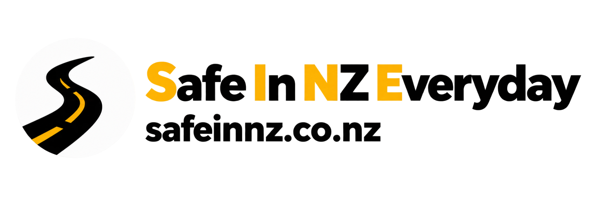

01 / PRACTICAL DRIVING
有人带着练，问题当场讲清。
零基础起步、路考准备、海外驾照转换，或是重新找回驾驶信心。结合你的实际水平安排练习，把观察、判断和操作一步步练扎实。
- 中英文双语讲解
- 自动挡与手动挡
- Restricted / Full 准备
- 奥克兰驾驶课程
我们把正弦驾校的实车教学，与 SAFEINNZ 的在线学习连接起来。课前学懂、课上练会、课后巩固，让每一步练习都有方向。
中英文双语教学 · 奥克兰实车课程 · 随时在线学习SINE STUDIO 是正弦驾校与 SAFEINNZ 的共同品牌主页。一个专注实车指导，一个提供日常学习工具，服务同一件事：让你真正理解新西兰道路上的驾驶。
零基础起步、路考准备、海外驾照转换，或是重新找回驾驶信心。结合你的实际水平安排练习，把观察、判断和操作一步步练扎实。

从理论题库到模拟测试，从交规解析到路口情景和考点参考路线。用碎片时间练习，登录后回顾错题，让每一道题都成为理解规则的机会。
选一个最接近你的情况。我们帮你理清当前的学习重点，再找到合适的工具或课程。
把每次做错的原因弄清楚，比只记住正确选项更有用。先用在线平台建立交规基础，再通过模拟测试找出需要复习的部分。
刚上路时要处理的信息很多。先和教练明确自己的基础，从车辆控制、观察和简单道路环境开始，逐步增加难度。
准备路考时，把重点放在观察、判断和稳定执行。参考路线用来理解道路环境，真正需要带走的是能应对陌生道路的驾驶能力。
已经会开车，也可能对新西兰的道路环境不够熟悉。围绕靠左行驶、路口判断、英文指令和日常出行场景，有针对性地补齐不熟悉的部分。
听得懂原因，
才能在路上做出自己的判断。
我们在教学中反复遇到同一个问题：题做对了，上路还是犹豫；课上听懂了，回家却不知道怎么复习。因此，我们把实车教学与在线学习放在一起，让规则、情景和操作能够互相对应。
不只给答案，也讲清观察什么、如何判断，以及这条规则在真实道路上怎样使用。
从已有经验和当前困难出发安排练习，让有限的课时用在需要改善的地方。
不提供包过承诺。参考路线帮助理解环境，训练的目标是独立、安全地处理不同路况。
用中文讲透规则，用英文熟悉指令，把学习落实到每一次驾驶。
结合交规理解与实车练习，帮助学员梳理驾驶中的问题和改进方向。
面向北岸学员，围绕实际基础和学习目标，逐步建立驾驶信心。
这里先回答几个常见问题。具体课程安排，可以直接联系教练确认。
SINE STUDIO 是这两个品牌的共同主页：正弦驾校提供实车驾驶教学，SAFEINNZ 提供在线驾驶学习工具。你可以单独使用学习平台，也可以把它作为上课前后复习的工具。
可以。理论刷题和模拟测试免费开放，不需要先报名驾驶课。登录后可以使用错题本，方便后续复习。
可以。我们提供中英文双语讲解，也可以在练习中帮助你熟悉英文驾驶指令。预约时告诉教练你的语言偏好即可。
不是。参考路线用于熟悉考点周边环境、理解路口和道路特点，实际考试路线可能不同。练习时应把重点放在规则理解和独立判断。
可以进入正弦驾校网站查看课程信息，或致电 022 535 5602，说明驾照类型、驾驶经验、所在区域和方便上课的时间。具体费用与安排以预约确认信息为准。
想先自己学，就打开 SAFEINNZ。需要有人陪你梳理驾驶问题，就联系我们安排实车课程。